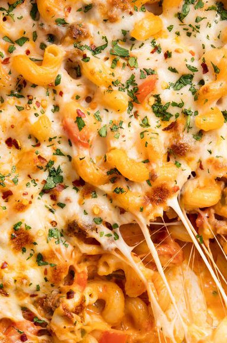

Italian Mac & Cheese
This is our new Italian dreamboat.
YIELDS
PREP TIME
TOTAL TIME
4 SERVINGS
15 MINS
1 HOUR
Ingredients
1 lb. Italian sausage
1 large onion, diced
2 cloves garlic, minced
1 red bell pepper, diced
12 oz. cavatappi
1 oz. (16-oz.) jar marinara
Kosher salt
1/4 c. half-and-half or heavy cream
2 c. shredded mozzarella, divided
Directions
In a large oven-safe skillet over medium-high heat, cook sausage, breaking up with a wooden spoon, until seared and no longer pink, about 4 minutes.
Add cavatappi and stir until coated, then pour over marinara and broth and season with salt.
Transfer mixture to a large baking dish and sprinkle with remaining mozzarella. Bake until cheese is bubbly and golden, about 10 minutes.
Garnish with parsley before serving.